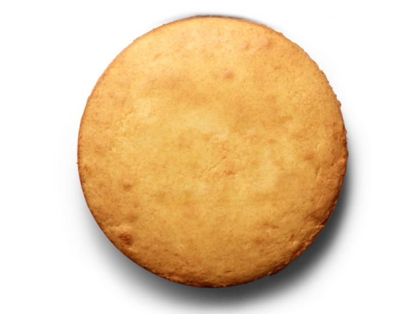

Plain Vanilla Cake

Description
Plain sweet vanilla cake.
Add any toppings you desire to this perfect base!
Ingredients
- 2 sticks of unsalted butter
- 3 cups of all purpose flour
- 1 tablespoon baking powder
- 0.5 teaspoons of salt
- 1.25 cups of sugar
- 4 eggs
- 1 tablespoon of vanilla extract
- 1.25 cups of milk
Steps
- Butter cake pans and line bottom of the pan with parchment paper.
- Butter the parchment paper and line the pan with flour.
- Whisk together 3 cups of flower, all of the baking powder, and salt.
- Add 2 sticks of butter and all of the sugar, then use a mixer to mix until light and fluffy.
- Add in eggs and continue to mix.
- Add in vanilla and continue to mix.
- Add in milk then flour in 3 batches, while continuing to mix until smooth.
- Pour mixture into previously prepared pans and bake at 350 degrees fahrenheit.
- Once top of the cakes are lightly golden, take them out of the oven and let them cool.
Return to homepage